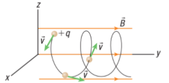

Motion of Charged Particles in a Magnetic Field
The masses of the billiard ball and bowling ball determine the distance they will be deflected by the force. If you know the amount of force, the speeds of the balls, and the curve of their paths, you can calculate the mass of each ball.
Charges and Uniform Circular Motion
Earth’s Magnetic Field
Charged particles traveling parallel to a magnetic field do not experience a magnetic force and continue moving along the field direction. Charged particles traveling perpendicular to a magnetic field experience a force that keeps them moving in a circular path.
Charged particles with velocity components that are both parallel and perpendicular to a magnetic field experience a combination of these effects.

When the velocity of a charged particle has non-zero components parallel and perpendicular to the magnetic field, the particle will move along a spiral path.
Collisions between the charged particles and atoms in the atmosphere release light that causes the glow of the aurora borealis in the northern hemisphere and the aurora australis in the southern hemisphere.

The aurora australis. The glow of the auroras occurs when charged particles spiral along Earth’s magnetic field lines and collide with molecules in the atmosphere above the polar regions.
James A. Van Allen, an American physicist, discovered the toroidal (doughnut-shaped) zones of intense radiation while studying data from a satellite he built in 1958. Van Allen was able to show that charged particles from cosmic rays were trapped in Earth’s magnetic field.
Field Theory
Studying gravitational, electric, and magnetic forces has revealed differences and similarities between these forces and their respective fields.
The electric and magnetic fields have a stronger effect on the motion of subatomic particles, such as protons and electrons, but the gravitational field has a stronger effect on large objects, such as planets, galaxies, and clusters of galaxies.

Despite these similarities and differences, field theory states that electric and magnetic fields are more closely related to one another than they are to the gravitational field.
In fact, the electric and magnetic fields are thought to be different aspects of a single field, the electromagnetic field.